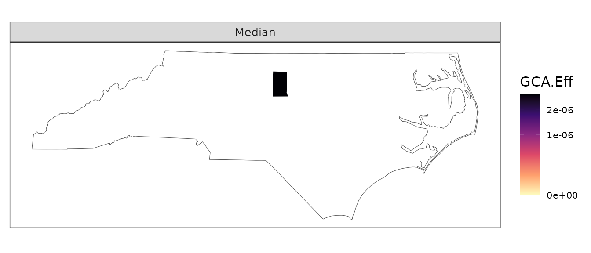
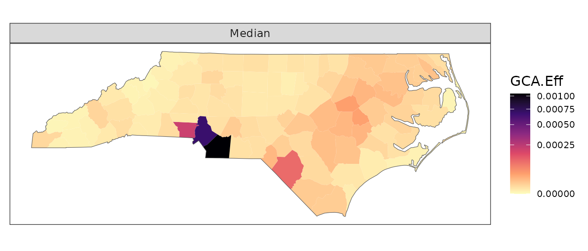
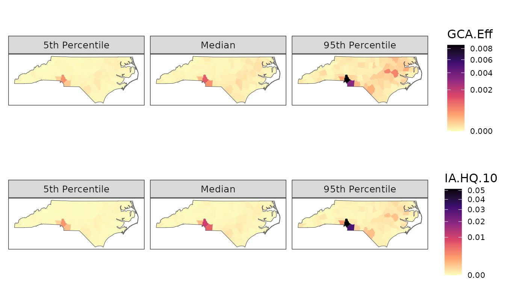

GeoTox S3 object
oo-s3.Rmd
library(GeoTox)
#>
#> Attaching package: 'GeoTox'
#> The following object is masked from 'package:stats':
#>
#> simulateSingle region
idx <- 1 # Region index, 1-100
x <- simulate(GeoTox(),
age = split(geo_tox_data$age, ~FIPS)[[idx]],
obesity = geo_tox_data$obesity[idx, ],
exposure = split(geo_tox_data$exposure, ~FIPS)[[idx]],
simulated_css = geo_tox_data$simulated_css,
n = n)
x <- calc(x, hill_params)
x$region_boundary <- geo_tox_data$boundaries$county
x$group_boundary <- geo_tox_data$boundaries$state
# Set name of region so FIPS can be used to get the geometry
names(x$resp) <- sort(geo_tox_data$boundaries$county$FIPS)[idx]
plot(x)
Multiple regions
x <- simulate(GeoTox(),
age = split(geo_tox_data$age, ~FIPS),
obesity = geo_tox_data$obesity,
exposure = split(geo_tox_data$exposure, ~FIPS),
simulated_css = geo_tox_data$simulated_css,
n = n)
x <- calc(x, hill_params)
x$region_boundary <- geo_tox_data$boundaries$county
x$group_boundary <- geo_tox_data$boundaries$state
plot(x)
x
#> GeoTox object
#> Regions: 100
#> Fields:
#> Name Class Dim
#> age list(integer) 100 x (5)
#> IR list(numeric) 100 x (5)
#> obesity list(character) 100 x (5)
#> C_ext list(matrix) 100 x (5 x 8)
#> C_ss list(matrix) 100 x (5 x 8)
#> D_int list(matrix) 100 x (5 x 8)
#> C_invitro list(matrix) 100 x (5 x 8)
#> resp list(data.frame) 100 x (5 x 4)
#> region_boundary sf, data.frame 100 x 2
#> group_boundary sf, data.frame 1 x 1Plot options
fig <- plot(x, metric = "IA.HQ.10")
fig
fig + ggplot2::guides(fill = ggplot2::guide_colorbar(title = "New legend"))
quantiles <- c(0.05, 0.5, 0.95)
quantile_labels <- c("5th Percentile", "Median", "95th Percentile")
plot(x, quantiles = quantiles, quantile_labels = quantile_labels)
fig1 <- plot(x, metric = "GCA.Eff", quantiles = quantiles, quantile_labels = quantile_labels)
fig2 <- plot(x, metric = "IA.HQ.10", quantiles = quantiles, quantile_labels = quantile_labels)
ggpubr::ggarrange(fig1 , fig2, align = "v", nrow = 2)